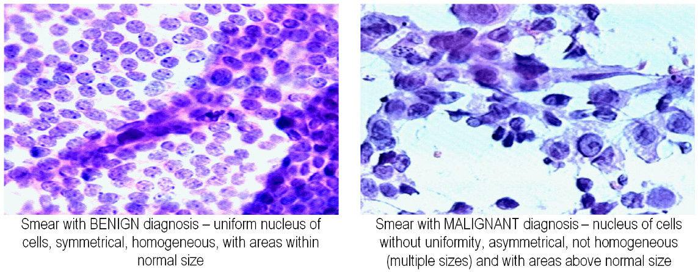

Classification#
Classification is a supervised learning task where the goal is to predict discrete labels, or categories, for new observations based on previously labeled examples. It is among the most widely-used tasks in machine learning and appears in numerous practical scenarios, from medical diagnoses and spam detection, to facial recognition and natural language processing.
In classification, we are given pairs of \((\mathbf{x}, y)\), the so-called training data and we would like to train a function \(f(\mathbf{x})\) that predicts a categorical value for \(y\).
Inputs: A collection of feature vectors, typically represented as vectors in a vector space, for example Euclidean space:
Labels: Each feature vector is assigned a label from a finite set of categories, often represented as:
where ( C ) is the number of distinct classes.
The primary goal is to learn a classification function or classifier \(f(\mathbf{x})\) that maps input vectors to class labels:
In binary classification, there are only two classes (e.g., “benign” or “malignant”, “spam” or “not spam”). Multi-class classification extends this concept to more than two categories, such as recognizing digits from images (0–9).
A Classification function typically relies on a set of parameters \(\mathbf{\theta}\) to make predictions.
Examples of classification algorithms are
Logistic Regression: A probabilistic linear classifier that models the likelihood of belonging to a class.
Support Vector Machines (SVM): Finds the hyperplane that best separates classes with the largest margin.
Nearest Centroid Classifier: Classifies samples based on their distance to class centroids, directly illustrating fundamental concepts in linear algebra such as vector norms and distance metrics.
Neural Networks: Highly expressive nonlinear classifiers that learn hierarchical representations of data.
Breast Cancer Diagnosis as a Binary Classification Problem#
To illustrate the concepts of classification, consider a binary classification problem where we want to classify breast tissue samples represented as feature vectors in a 2D space into two classes (malignant and Benign). For the task at hand, this means that we use features from the tissue samples to determine wether a patient likely has a benign or malignant diagnosis.
Let’s start by looking at data from the Wisconsin Diagnostic Breast Cancer (WDBC, 1993) data set:
Show code cell source
### Some imports
# All packages are included in the Anaconda python distribution and integral part of a machine learning Python environment).
import numpy as np # efficient matrix-vector operations
import numpy.linalg as la # linear algebra (solvers etc.)
import pandas as pd # data processing, CSV file I/O (e.g. pd.read_csv)
import seaborn as sns # data visualization
sns.set_style("whitegrid") # set the figure default style
sns.set_context("talk")
sns.set(font_scale=1.5) # bigger fonts in images
import matplotlib.pyplot as plt # basic plotting
from sklearn.model_selection import train_test_split
# some not so standard imports:
import sys
sys.path.append("../../datasets/uci_breast_cancer") # add dataset directory to path, such that we find the scripts relating to the dataset
import plotting_util as util # useful plotting tools for teaching (see ../datasets/uci_breast_cancer/
# fetch dataset from Kaggle
import kagglehub
path = kagglehub.dataset_download("uciml/breast-cancer-wisconsin-data/versions/2")
df = pd.read_csv(path+"/data.csv")
df['bias'] = np.ones(df.shape[0]) # add a column of ones for the bias term
# data (as pandas dataframes)
X = df[["concavity_mean", "texture_mean", 'bias']] # pick two features and the column for the bias term
y = df["diagnosis"]
# split the data into a training set (70%) and a test set (30%)
X_train, X_test, y_train, y_test = train_test_split(X, y, test_size=0.3, random_state=1)
# print out some basic information about the training data
print ("Benign samples 'B': {:}".format((y=='B').sum()))
print ("Malignant samples 'M': {:}".format((y=='M').sum()))
Benign samples 'B': 357
Malignant samples 'M': 212
The data consists of two numerical features that describe the distribution of cells in breast tissue samples that are visible under the microscope together with the diagnosis wether the tissue is benign (B) or malignant (M).

The two features represent the average concavity and texture of the nuclei and have been determined from image processing techniques [1]. In machine learning, we typically represent the features that belong to a sample with index \(n\in \{1,2,\dots, N\}\) as a vector \(\mathbf{x}_n\) that lives in an appropriate vector space \(V\). In this example, the vector space is \(\mathbb{R}^2\), the 2-dimensional Euclidean space.
Show code cell source
# plot the data
f, ax = plt.subplots(figsize=(7, 7))
ax = util.scatter_plot_kde2(X_train,y_train)
ax = plt.ylim([8,39.9])
ax = plt.xlim([-0.01,0.45])
When we look at the plot, we observe, that the location of a feature vector \(\mathbf{x}_n\) in the 2-dimensional space provides some information about the diagnosis.
Feature vectors in the bottom-left corner of the plot are more likely to be benign, while feature vectors in the top-right corner are more likely to be malignant. Thus, given the information encoded in these feature vectors, we could determine the likely diagnosis, i.e., to classify the samples as malignant or benign.
Geometric intuition#
Classification often involves finding boundaries or decision surfaces within feature space that separate the different classes. Here, we will use a linear classifier, namely logistic regression, to separate classes using a line (hyperplane in higher dimensions) parameterized by \(\theta=\{\mathbf{w},b\}\) separates the two classes:
Here, \(\mathbf{w}\) is the normal vector to the hyperplane and \(b\) is the bias term. The decision boundary is defined by the set of points \(\mathbf{x}\) for which the equation holds true.
Show code cell source
f, ax = plt.subplots(figsize=(7,7))
ax, clf = util.plotfun2D_logreg(X_train,y_train, threshold=0.5, prob=True)
ax = plt.ylim([8,39.9])
ax = plt.xlim([-0.01,0.45])
Then, given the feature vectors for new samples (test data) for which we don’t know the diagnosis, we can predict the diagnosis \(\hat{y}=f(\mathbf{x})\) based on which side of the decision boundary they land.
Show code cell source
f, ax = plt.subplots(figsize=(7,7))
ax, clf = util.plotfun2D_logreg(X,y,X_test=X_test, y_test=y_test, threshold=0.5, prob=True)
ax = plt.ylim([8,39.9])
ax = plt.xlim([-0.01,0.45])
In classification, linear algebra concepts like vector spaces, norms, and inner products naturally appear. By understanding these concepts, we gain deeper intuition into how classification algorithms work, their limitations, and how to extend them to more complex, nonlinear settings (for example, via kernels).
Training classification algorithm requires us to find the optimal parameters of the classifier that minimize a so-called loss function, which quantifies the difference between predicted and actual labels. This optimization process often involves techniques from calculus, such as gradients and Hessians, and optimization theory, such as gradient descent or second-order methods.
Many classification algorithms, including logistic regression, are probabilistic in nature. Thus, they not only provide a predicted class label but also a measure of confidence in that prediction, which can be crucial in many applications. We will also discuss the foundations of probability theory, including concepts like distributions, covariance, and Bayesian inference. These concepts are essential for understanding how to model uncertainty in predictions and how to incorporate prior knowledge into our models.
References#
[1] N. Street, W. Wolberg, O.L. Mangasarian: Nuclear Feature Extraction For Breast Tumor Diagnosis. IS&T/SPIE 1993.